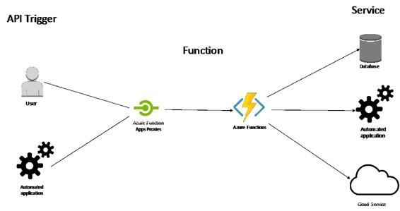

Serverless microservice
In this section, we are going to create a serverless microservice application on Microsoft Azure. In order for you to easily compare and learn capabilities across cloud providers, we will use the same example of creating a Weather Services application, which we discussed in the previous chapter on AWS. So, as a refresher, the overall application will have three main parts:
